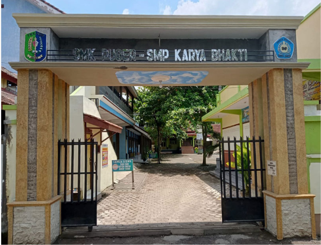

Platform terpadu untuk absensi berbasis radius GPS geofence, pelaksanaan ujian online (CBT) anti-curang, dan rekapitulasi nilai akademik otomatis dalam satu ekosistem terintegrasi.
Dirancang khusus untuk memenuhi standar operasional sekolah kejuruan modern, efisien, dan transparan.
Absensi mandiri siswa melalui smartphone dengan verifikasi batas radius koordinat sekolah (80 meter). Dilengkapi checkpoint anti-fake GPS dan deteksi akurasi satelit.
Pelaksanaan ujian harian, PTS, dan PAS secara daring. Mendukung penyimpanan jawaban otomatis (autosave) berkala dan pendeteksi perpindahan tab aplikasi browser.
Pengelolaan capaian pembelajaran dengan formula pembobotan otomatis Kurikulum Merdeka. Rekapitulasi per kelas dapat diekspor langsung ke berkas Excel dan PDF.
Tidak ada lagi kecurangan titip absen atau manipulasi kehadiran. Sistem eDupu mengintegrasikan HTML5 Geolocation API dengan formula jarak geodesik Haversine untuk memverifikasi posisi siswa terhadap koordinat resmi kampus SMK Puger.
Browser siswa meminta izin lokasi untuk mengambil titik latitude dan longitude dengan tingkat presisi meter.
Jika jarak siswa ≤ 80 meter dari gerbang sekolah, tombol presensi otomatis aktif dan mencatat jam kehadiran.
Sistem memverifikasi parameter akurasi GPS seluler dan mencatat jejak timestamp yang tidak dapat diubah di perangkat.

Alur kerja praktis bagi seluruh civitas akademika SMK Puger.
Siswa, guru, wali kelas, atau admin login dengan kredensial resmi yang telah terdaftar di database sekolah.
Siswa membuka modul presensi, sistem memverifikasi posisi radius sekolah (80m), lalu mencatat absensi real-time.
Siswa mengikuti pembelajaran sesuai jadwal dan mengerjakan ujian online terstandarisasi dengan autosave cloud.
Guru dan admin memperoleh rekapan presensi dan nilai akademik siap cetak dalam format resmi Excel dan PDF.
"Sistem presensi GPS geofencing memangkas antrean siswa di gerbang secara signifikan. Pihak sekolah kini dapat memantau kedisiplinan dan rekap kehadiran secara transparan setiap pagi."

"Fitur CBT dengan autosave dan skoring otomatis sangat meringankan tugas guru. Koreksi ratusan siswa selesai dalam hitungan detik dan langsung masuk ke leger nilai."

"Aplikasi sangat ringan diakses lewat browser HP, tidak perlu download APK berat di Play Store. Cukup masuk di lingkungan sekolah dan klik absen langsung tervalidasi."

Masuk sekarang menggunakan akun resmi Anda untuk mengakses presensi geofence, modul pembelajaran, dan administrasi akademik terpadu.